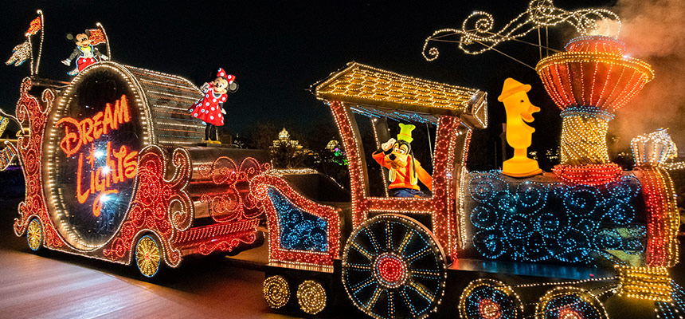
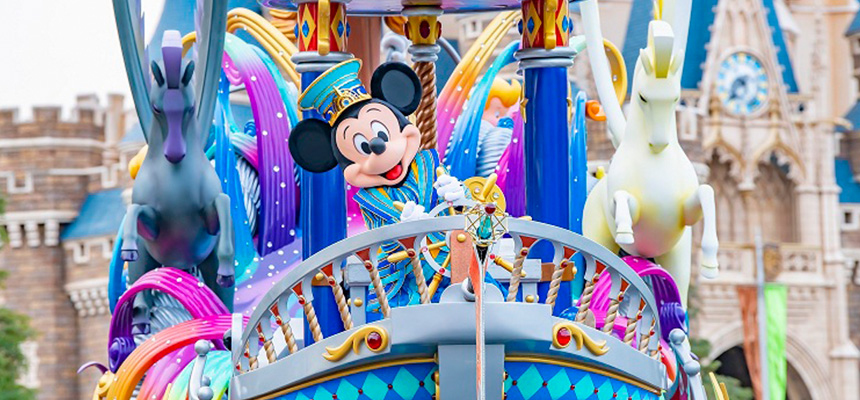
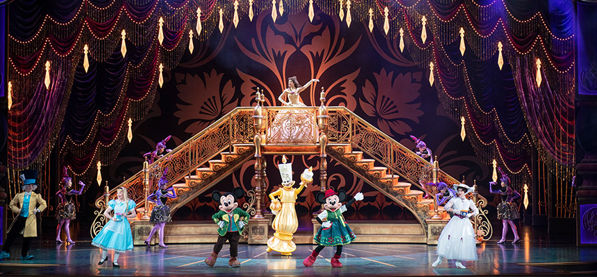
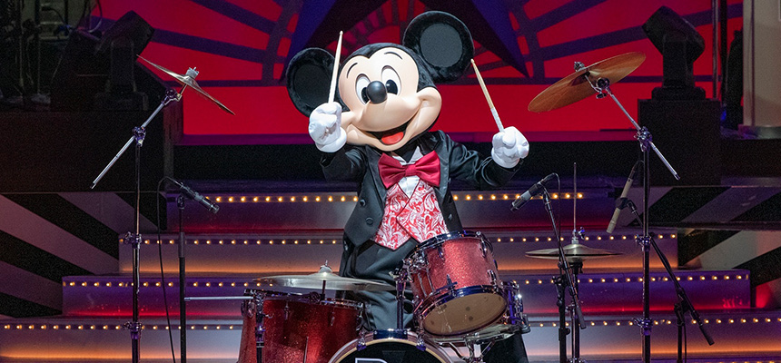
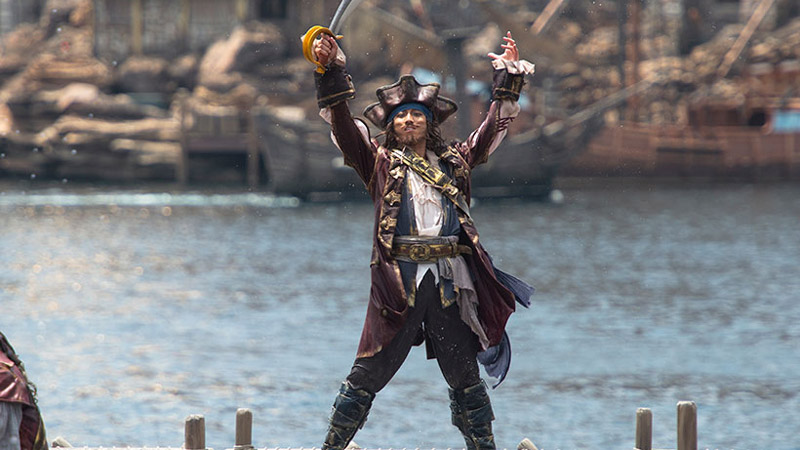
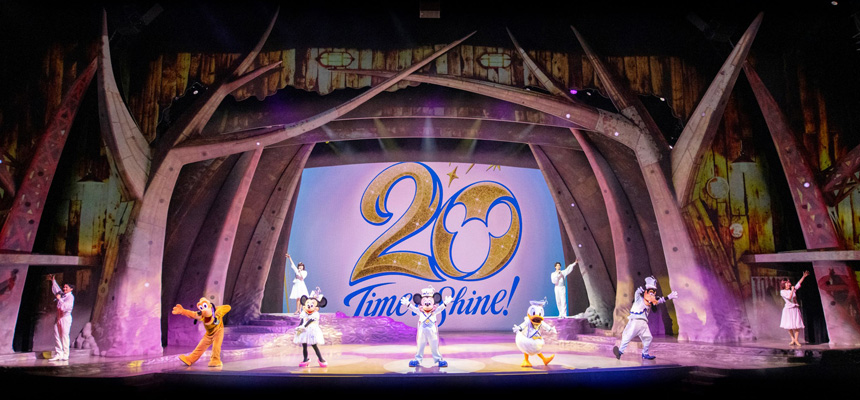

おすすめなパレードやショーを紹介します！
１位 東京ディズニーランド・エレクトリカルパレード・ドリームライツ
ディズニーランドの夜の定番パレードです。夜を照らす光は圧巻です！
２位 ドリーミング・アップ！
ランドの35周年を記念して始まったパレードです。ミッキーたちの他にもベイマックスやメリーポピンズが登場します！
３位 ミッキーのマジカルミュージックワールド
新しくできたフォレストシアターで行われているショーです。たくさんの音楽とキャラクターが登場します！
１位 ビッグバンドビート
ブロードウェイ・ミュージックシアターで行われている生演奏のショーです。ドラムを演奏するミッキーが注目です！
２位 夏のハーバーショー
夏に行われるハーバーショーです。たくさんの水がかかって夏にぴったりのショーです！(写真はパイレーツ・サマーバトル”ゲット・ウェット”)
３位 東京ディズニーシー20周年“シャイニング・ウィズ・ユー”
シーの20周年を記念したショーです。20年間の歴史を振り返って懐かしさを味わえます！
トップメニューはこちら
アトラクションのおすすめはこちら
ショップのおすすめはこちら
フードのおすすめはこちら